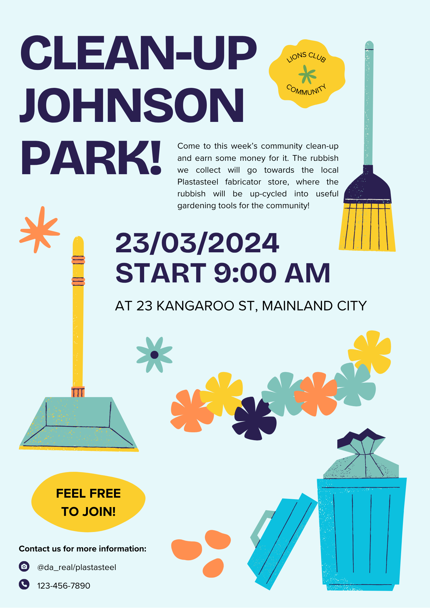
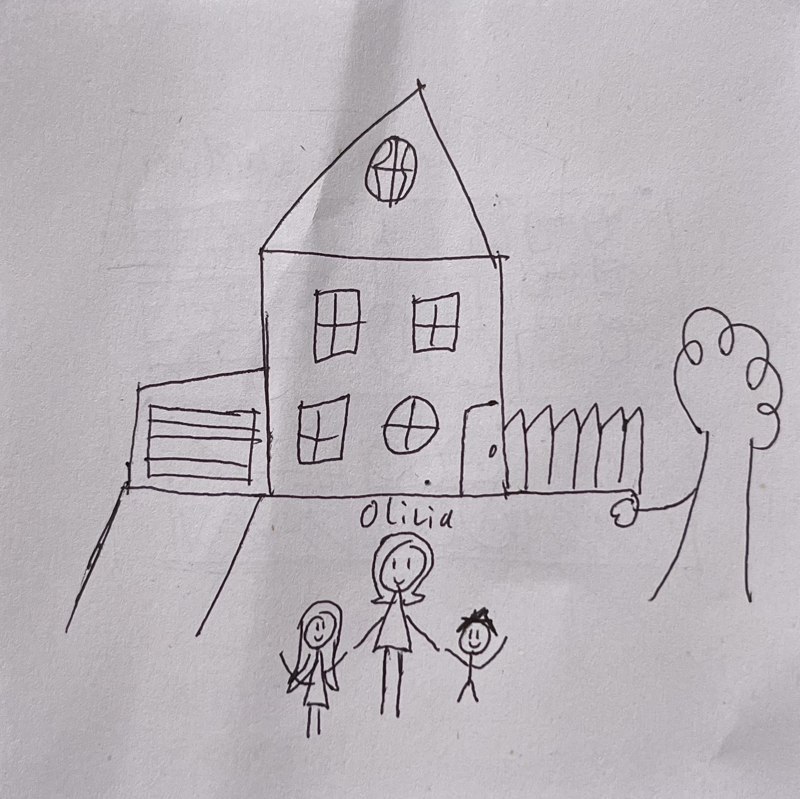

<!DOCTYPE html>
<html lang="en">

</html>
<head>
    <meta charset="UTF-8" name="viewport" content="width=device-width, initial-scale=1.0">
    <link rel="stylesheet" href="styles.css">
    <link rel="icon" type="image/png" href="picon2.png">

    <title>Assessment 3</title>
</head>


<body>
    <br>
   <h1>©Plastasteel's Satisfied Customers and Questions Page</h1>
<br>
       <nav class="navbar">
            <ul>
                <li><a href="index.html">Welcome</a></li>
                <li><a href="beginning.html">Beginning</a></li>
                <li><a href="conflict.html">Conflict</a></li>
                <li><a href="ending.html">Ending</a></li>

            </ul>
       </nav>
<br>
<br>
<br>
<br>
<br>
<br>
    <h2>Our Solution</h2>

        <div id="solution">
            <br>
            <p>These concerns of Olivia's is very insightful and great because those kinds of questions are exactly why this website exists, and we're excited to say we finally have an awnser to those questions!</p>
            <br>
        </div>

    <h2>Protecting Buissnesses</h2>
        <div id="sol1">
            <br>
            <p>We undertsand that with this invention there won't bee much need to buy certain things anymore, thats part of our goal for a more affordable living. That's why we've introduced a system within our fabricatrs that limits what is possible to create. Admiedtly we are working on ways to reduce the energy cost and renewabale anergy value of our fabrictaors as currently they require large amounts of power to create the commisioned product, so we don't have an easy solution for that. We understand that this makes peopel question if its worth printing that new spatula you need or buy a new one at a cheaper cost. Currently our solution is to come to our fabricator stores where we can custom print certain expensive prints at a fraction of the cost. </p>
            <p>When using the fabricators, we've made it so you have to purchase the patent to create a product, allowing you to create the product for a certain number of times before needing to buy the patent again, this way small buissnesses using our technology can continue to make a profit but still discount their prices. Alongside this if you are required a new light for your home and can't find one that fits yoru budget and asthetic, its easier and more affordable to commision your local lights store to design a light patent for you to print from home or in one of our fabricator stores. This way you are still requiring the hard work and talent of industry professionals and they don't lose their buissness. </p>
        <br>
        </div>

    <h2>Microplastics</h2>
        <div id="sol2">
            <br>
            <p>During its creation the Plastasteel chemical compound was not able to be safely disposed of because of the very problem of microplastics and other micro-sized remenants of the materials we create with the chemical. Since then we have addressed this. </p>
            <p>To achieve this we have made it so that our products are able to be submerged within carbonated liquids for a certain time period. The carbination reacts to the ©Plastasteel chemical compound as it breaksdown and is safely dissolved into nothing, making it possible to safely dispose as no micro plastics or dangerous chemicals will affect water sources.</p>    
            <p>We are also working on collaborating with cities to introduce our sepcial pattented rubbish bins around local cities. These will be equipped with a disposable carbonated liquid bin able to safely dissolve the products</p>
            <p>You are able to dispose of the remainding liquid down the sink, watered into plants or preferably pouring it into the coolant compartment of the fabricator. However we strongly advise you do not drink the carbonated water after use. We also have special designs for waterbottles, cups and such that use ©Plastasteel,that will prevent the products from completely dissolving. </p>
            <p>Below is a visual demonstration video of how to safely dissolve and recycle unwanted plastasteel products:</p>
            <br>
            <div id="tut">  
                      
                <video controls muted src="Video/Instruction Video.mov" width="600"  margin="20px" ></video>
                
            </div>
        <br>
        </div>

    <h2>Valuable Commodity Rubbish Scheme</h2>
        <div id="sol3">
            <br>
            <p>Part of our mission statment is to reduce overconsumption and neglectful discarding of objects and materials thorugh our recyclable process, as the current form of recycling is a technically sound solution, however the process to come people sounds tedious and unessesary, and if laborious for tip workers to go through. The general sentiment is it's easier to drop your used soft drink can on the floor, as its of no personal consequence to you afterall. Instead we are aiming to have change people's thinking to "I could use this coke can to make that new shelf I need!" </p>
            <p>We are hoping to make rubbish and recyclable items more valuable, thus less likely to be discarded and foster a system of recyclable, endless usage for everyone. This way we are working to reduce the pollution problem and foster the idea that rubbish can become a valuable commodity, even encourage communities to come together and clean cities and local beaches for their own benefits. This way even if you don't own a fabricator you can still profit off of the recycling process through donating rubbish and making a small amount of money from donating. </p>
            <p>Because natural materials are still difficult to intergrate with ©Plastasteel, there is still a big need to go to stores that produce their products normally, like leather items, wooden tables, furniture or home grown foods and products. We are hoping that if people begin to see the value in recyling rubbish for their own benefits, they will think the same way about biodegradable natural materials, compost and sort bins out appropirtly. We're hoping that people will apply this concept to normal rubbish as well, considering our reach will not be able to reach every part of the world.</p>
            <br>
                
            <br>
      
        </div>

    <h2>Happy Customers</h2>

        <div id="happy">
            <p>These are only a few options addressing Olivia's concerns. For now though she states that she feels more confident than ever in the future of our product!</p>
              
                
              
            <div id="oliviaspeak">
                <p><i>"I am genuinly surprised at what the technology is able to do now. I had no idea it could do all of this, it dosen't seem real!"</i></p>
            </div>
            <p>And with that, dear viewer, we part ways with Olivia and her family. Here at ©Plastasteel Inc we will continue to push the boundries of innovation and science to achieve better lives for people like Oliva, and be sure to listen to any questions or concerns our customer base will have in the future.</p>
            <p>We hope this website awnsered some questions and made you excited for the future! Don't forget to check out our new fabricator deals instore now, and give them the code <b>"OLIVIA-203X"</b> to get 20% on your next ©Plastasteel purchase!</p>
        </div>

        <br>
   
    
</body>
</html>